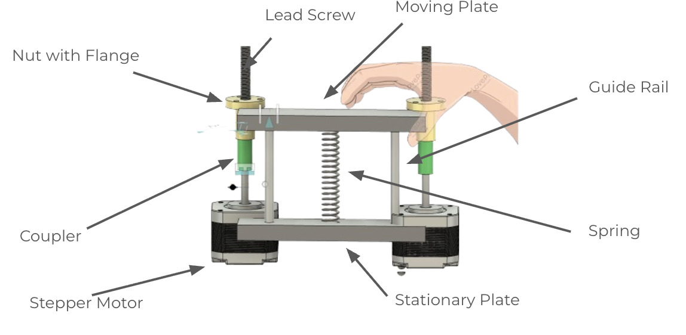
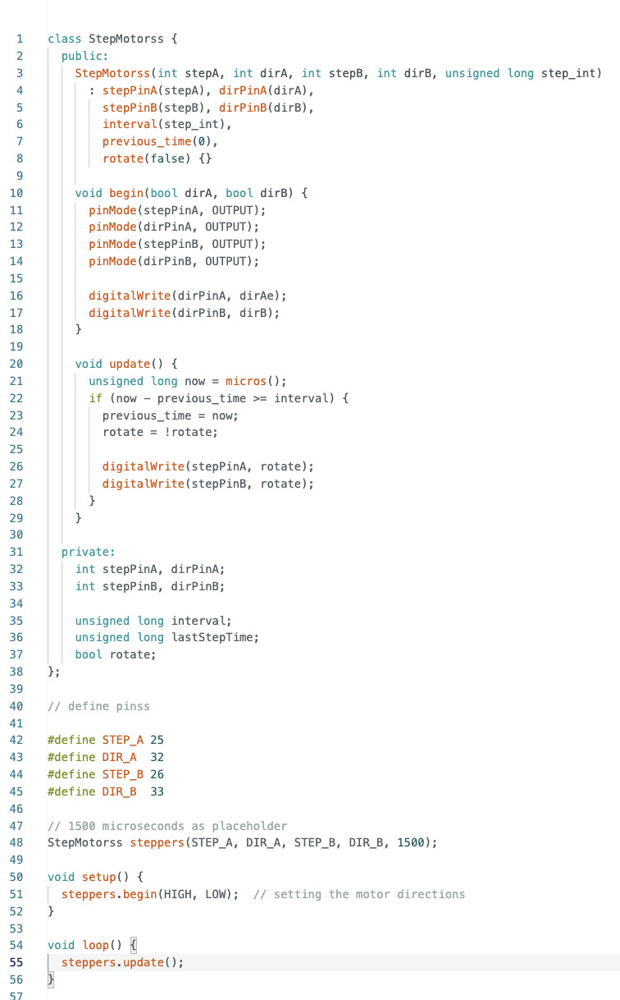
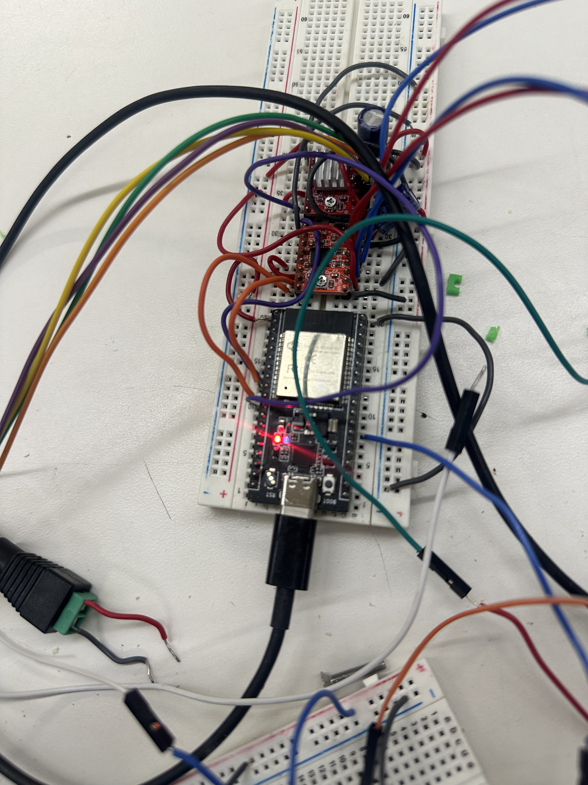

Minimum Viable Product: Dynamic Grip Strengthener
For my final project, I am creating a dynamic grip strengthener that can adjust resistance based on the user’s input. This device is intended for users whose hand function varies day to day, including people with arthritis, Parkinson’s, or those recovering from hand surgery. The system must detect the force applied by the user and dynamically adjust resistance in response.
To build this MVP, I created a CAD model of the system shown below.
The primary output devices for this prototype are NEMA 17 stepper motors. I gathered the necessary components including stepper motors, motor drivers, breadboards, wiring, lead screws, lead screw nuts, capacitors, and steel guide rods.
My first goal was to have both stepper motors move reliably. Each motor driver requires: STEP and DIR signals from GPIO pins, ENABLE tied to ground, and VMOT/GND connected to an external motor power supply. A 100 µF capacitor was added across VMOT and GND to reduce voltage spikes.
Following the CAD model, I assembled a rudimentary physical version of the device. Below is an image of the wiring and a video demonstrating the spring compression mechanism.
